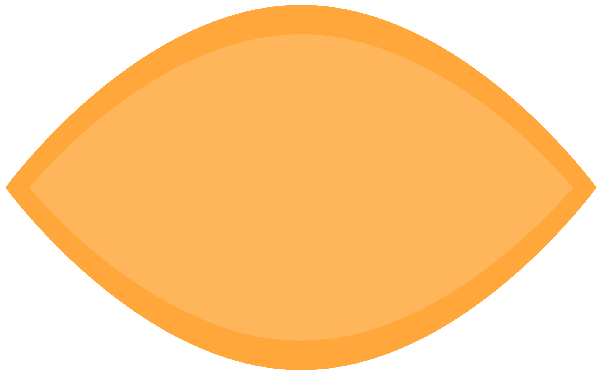
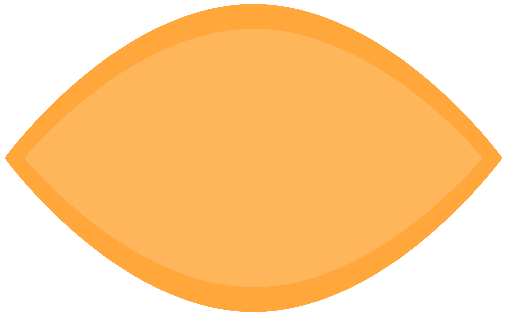

/You
/You
Things which are happening with you right now!

Your body has produced
0red blood cells
2,314,815 per secondYour fingernails have grown
0nanometers
1.339nm per secondYou've inhaled
0potentially harmful bacteria
11 per second 
You've blinked
0times
15 per minute
Your eyes have moved
0times
2.74 per secondYour hair has grown
0nanometers
4nm per second
Your heart has pumped
0liters of blood
0 gallons 5.26l per minuteYour brain has processed up to
0megabytes of data
1.4mb per secondof your hairs have fallen out
3 per hour
You've shed
0skin cells
55,556 per secondYour brain has performed up to
0mathematical calculations
1,000,000,000,000,000,000 per secondMore Streams


This stream shows how many things are happening with and inside you RIGHT NOW! This stream includes:
The amount of red blood cells your body produces every second
The amount your fingernails grow every second
The amount of potentially harmful bacteria you inhale every second
The amount of times you blink every minute
The amount of times your eyes move (fixations) every second
The amount your hair grows every second
The amount of blood your heart pumps every minute
The amount of data your brain processes every second
The amount of your hair which falls out every hour
The amount of skin cells you shed every second
The amount of mathematical calculations which your brain might perform every second
Do you enjoy 100% free visualizations with no ads?
Consider donating!